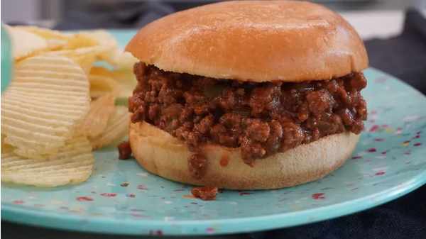

Sloppy Joe

A Sloppy Joe is a sandwich consisting of ground
beef and onions in a tomato-based sauce served on a
hamburger bun.
You will need:
- 1 pound lean ground beef
- ¼ cup chopped onion
- ¼ cup chopped green bell pepper
- ¾ cup ketchup, or to taste
- 1 tablespoon brown sugar, or to taste
- 1 teaspoon yellow mustard, or to taste
- ½ teaspoon garlic powder
- salt and ground black pepper to taste
- 6 hamburger buns, split